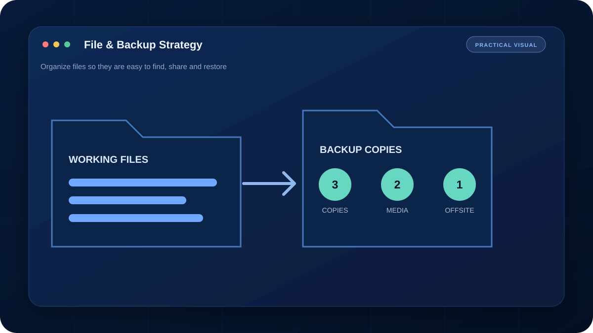

การ Sync ไม่เท่ากับ Backup เสมอไป หากลบไฟล์หรือไฟล์ถูกเข้ารหัส การเปลี่ยนแปลงอาจถูก Sync ไปทุกอุปกรณ์ ต้องมี Version history หรือสำเนาที่แยกออกจากระบบหลัก
Backup ที่ดีไม่ได้วัดจากคำว่า “สำรองแล้ว” แต่วัดจากการกู้คืนไฟล์ที่ถูกต้องได้ภายในเวลาที่ต้องการ
1. หลัก 3-2-1
- 3 ชุด: ไฟล์ใช้งานจริงและสำเนาอีกอย่างน้อย 2 ชุด
- 2 สื่อ: เช่น SSD ภายในร่วมกับ External Drive หรือ NAS
- 1 ชุดนอกสถานที่: Cloud หรือไดรฟ์ที่เก็บคนละสถานที่
2. แบ่งข้อมูลตามความสำคัญ
ไฟล์งานปัจจุบันอาจสำรองทุกวัน รูปและเอกสารสำคัญอาจสำรองรายสัปดาห์ ส่วนไฟล์ติดตั้งที่ดาวน์โหลดใหม่ได้ไม่จำเป็นต้องใช้พื้นที่เท่ากัน ระบุ RPO ว่ายอมเสียข้อมูลย้อนหลังได้กี่ชั่วโมง และ RTO ว่าต้องกลับมาทำงานภายในกี่ชั่วโมง
3. ป้องกัน Ransomware
ควรมีสำเนาที่ไม่ได้เชื่อมต่อกับเครื่องตลอดเวลา หรือใช้ระบบ Immutable/Versioned Backup จำกัดสิทธิ์บัญชีที่เขียนไฟล์สำรอง และไม่ใช้รหัสเดียวกับบัญชีหลักทั้งหมด
4. ทดสอบกู้คืน
สุ่มกู้ไฟล์เอกสาร รูป และโฟลเดอร์ทั้งชุดอย่างสม่ำเสมอ ตรวจวันที่ ขนาด และเปิดไฟล์จริงได้ จดขั้นตอนกู้คืนกับตำแหน่งรหัส Recovery เพราะ Backup ที่ไม่เคยทดสอบยังถือว่าเชื่อถือไม่ได้
คำถามที่พบบ่อย
Cloud Sync ถือเป็น Backup หรือไม่?
ไม่เสมอไป เพราะการลบหรือไฟล์เสียอาจถูกซิงก์ไปทุกเครื่อง ควรมี Version history และสำเนาแยกจากระบบหลัก
ควรทดสอบกู้คืนบ่อยแค่ไหน?
อย่างน้อยเมื่อเปลี่ยนระบบสำรอง และตามรอบที่เหมาะกับความสำคัญของข้อมูล